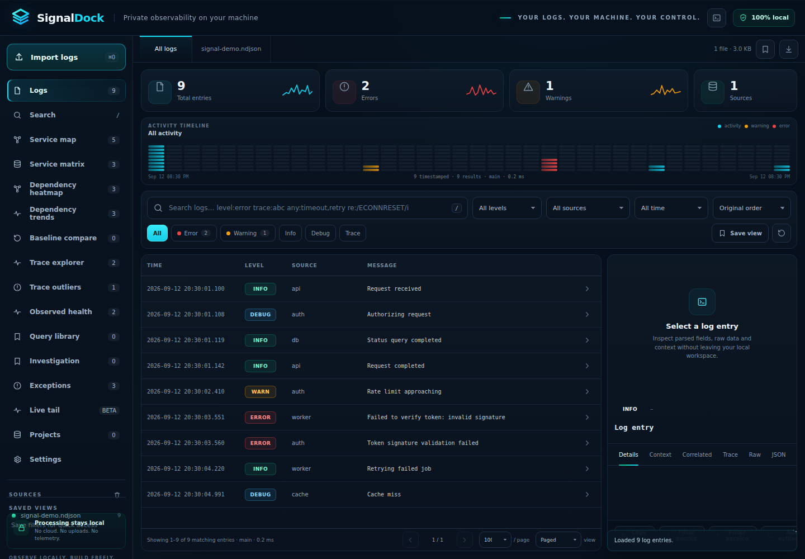

Local-first architecture
Imported log contents stay in the local application environment unless you explicitly export an artifact.
SignalDock is a zero-build local observability and investigation workspace. Open logs and OTLP-style trace data, search locally, inspect explicit service relationships, compare traces and datasets, group recurring failures, and preserve incident evidence without a SignalDock ingestion backend.

Imported log contents stay in the local application environment unless you explicitly export an artifact.
Worker indexes, result windows, topology views and selected analytics use explicit caps or streaming scans.
Missing telemetry stays missing. Parent-span topology, health labels and regressions are derived only from observed data.
Save workspaces, cases, baselines and reports deliberately without creating a hosted SignalDock account.
The website mirrors the capabilities present in the repository runtime. No AI agent, hosted collector, native installer or remote synchronization feature is implied where the application does not ship one.
Smart queries, source/level/time filters, correlation operators, guarded regular expressions, worker filtering and a bounded local 3-gram candidate index.
Index-first filtered results, paged or windowed table rendering, virtual spacers and bounded Trace Explorer windows reduce DOM and ranking overhead.
Inventory explicit trace IDs, inspect parent-link coverage, compare two traces, open representative samples and navigate into Trace Inspector views.
Analyze explicit parent-span branches, observed trace latency, bottlenecks and duration-backed flame spans without inventing missing timing data.
Service Map, Matrix, Dependency Heatmap and Dependency Trends use explicit parent-span relationships and retain empty filtered scopes as empty.
Summarize service error/warning rates, recurring exception groups, exact duration samples and recent-vs-previous error deltas from loaded evidence.
Deterministic normalized fingerprints group recurring failures and compare timestamped windows as spiking, rising, stable or falling.
Pin evidence, record hypothesis, impact, findings, milestones, activity and unified case timeline events with bounded local checkpoints.
Capture aggregate-only .sdbaseline snapshots and compare service, dependency and trace-set changes without embedding raw logs.
Keep reusable smart queries, folders, favorites and lightweight saved filter views with explicit local persistence and import/export.
Organize local project metadata, linked file handles where supported, recent workspaces/datasets/baselines/cases, relink and permission recovery.
IndexedDB recovery snapshots, bucketed search-cache restore, parser/filter/table/topology performance diagnostics and user-clearable local state.
Follow a changing local file in browsers that support File System Access, with explicit user permission and no SignalDock upload service.
Built-in Auto, NLog/text, JSON/NDJSON, Apache/Nginx, syslog, logfmt and custom named-group regex profiles plus a bundled CEF parser plugin.
Save and restore .sdsession state through explicit local actions; native filesystem capabilities are not embedded into portable exports.
The current repository keeps the stable product version at 2.8.33 while main contains additional unreleased large-dataset hardening. The browser application remains the shipped runtime.
Zero-build static application. Serve it locally over HTTP for the complete worker path, or open directly with main-thread fallback.
Protocol-v1 dedicated worker routing with session token, bounded envelopes and semantic fallback to the canonical query engine.
Saved views, query library, projects, recovery and compatible search-cache data use browser-local storage or IndexedDB.
Workspace saves, project reopen and Live Tail can use supported browser file capabilities after explicit user interaction.
The repository defines a narrow desktop-bridge contract, but Windows, macOS and Linux installers are not part of v2.8.33.
There is no SignalDock ingestion backend, account service, telemetry endpoint or remote project synchronization runtime.
Recent unreleased work reduces large-dataset memory and ranking cost across Trace Analysis, Trace Flame, Dataset Overview, Observed Health, Dependency Heatmap, Trace Explorer, Trace Outliers and Service Map while preserving deterministic output.
SignalDock keeps privileged browser capabilities at narrow platform boundaries and keeps analysis modules focused on the data you explicitly load.
The shipped app CSP keeps connect-src 'none'. Production audits reject fetch, XMLHttpRequest, WebSocket and EventSource primitives in runtime JavaScript.
Dedicated worker messages use a versioned protocol, unpredictable per-session token, allowlisted message types and bounded request behavior.
Local files are opened through user actions. File System Access and save/reopen capabilities remain behind platform and root-injected boundaries.
Project exports strip live file-handle capability keys, case attachments are metadata-only and baselines contain aggregate metrics rather than raw logs.
No agent install is required for ordinary local inspection. SignalDock detects supported structured/text families and creates portable artifacts only through explicit save or export actions.
.json.jsonl.ndjson.log.txt.zipJSON/ECS-style records, OTLP JSON exports, Docker logs, Apache/Nginx access logs, syslog, logfmt, multiline traces and CEF security events.
.sdsession.sdcase.sdbundle.sdprojectsPortable analysis sessions, case records, evidence bundles and local project metadata. Case attachment bytes are not embedded.
.sdbaseline.sdbaselines.json.ndjson.mdAggregate baselines/history plus explicit result and report exports. Large filtered result exports can use chunked NDJSON.
Safety: local ZIP handling, case imports, worker envelopes, recovery data and high-volume analysis paths use explicit bounds or fallback behavior. Exact limits depend on the feature and are enforced in the runtime modules.
Move from local evidence to a portable investigation without changing tools or shipping source data to a hosted observability backend.
SignalDock is intentionally explicit about what it can observe, what stays local and where browser capabilities begin and end.
No SignalDock backend is required for ordinary analysis. The shipped application CSP keeps connect-src 'none', and production audits reject runtime network primitives.
No. Local log, trace, case, project and workspace workflows do not require a SignalDock account or API credential.
Depending on the features you use, local settings, Saved Views, Query Library data, project metadata, recovery snapshots and compatible search-cache data can be stored locally in browser storage or IndexedDB.
A portable .sdsession is created through an explicit save action. Portable exports do not carry live browser file-handle capabilities.
Supported browsers can use File System Access for Live Tail, workspace saves and project link/reopen flows after explicit user permission. Other environments retain browser-download/main-thread fallbacks where implemented.
No. Observed Health summarizes only the logs and timing samples currently loaded. It is not a synthetic monitor, uptime service or causal root-cause engine.
Service Map, Matrix, Heatmap and Trends use explicit parent-span relationships present in the data. Missing topology is not silently inferred.
Case attachments are metadata-only references. SignalDock does not embed arbitrary referenced file contents into the Case Workspace record.
No. The current release is the local browser application. The repository contains a narrow future desktop capability facade, but native installers are not shipped in v2.8.33.
The bundled static website is script-free, uses no analytics runtime, loads no external runtime resources and carries connect-src 'none'.
Dataset View composition is shipped. Current main additionally contains unreleased large-dataset hardening.
No signup. No source-data upload. No telemetry dependency.